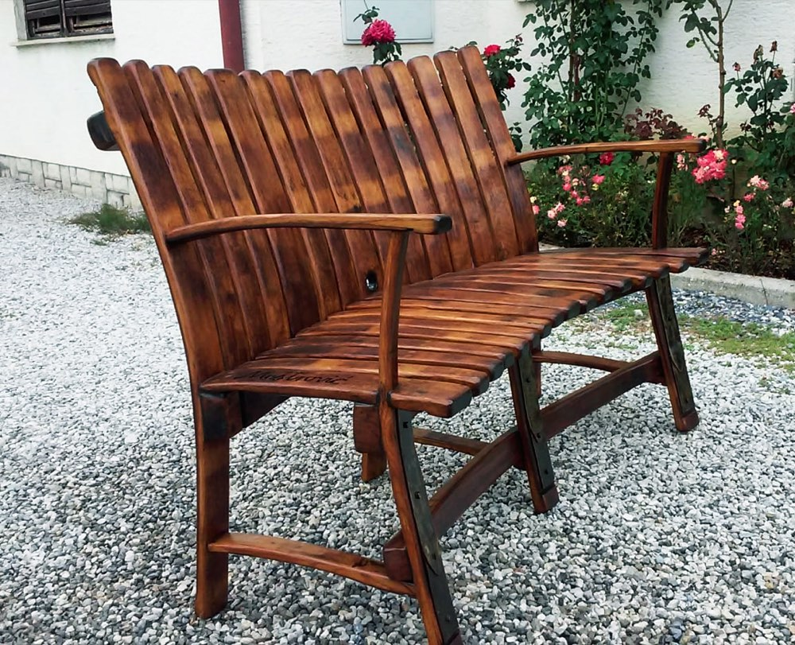
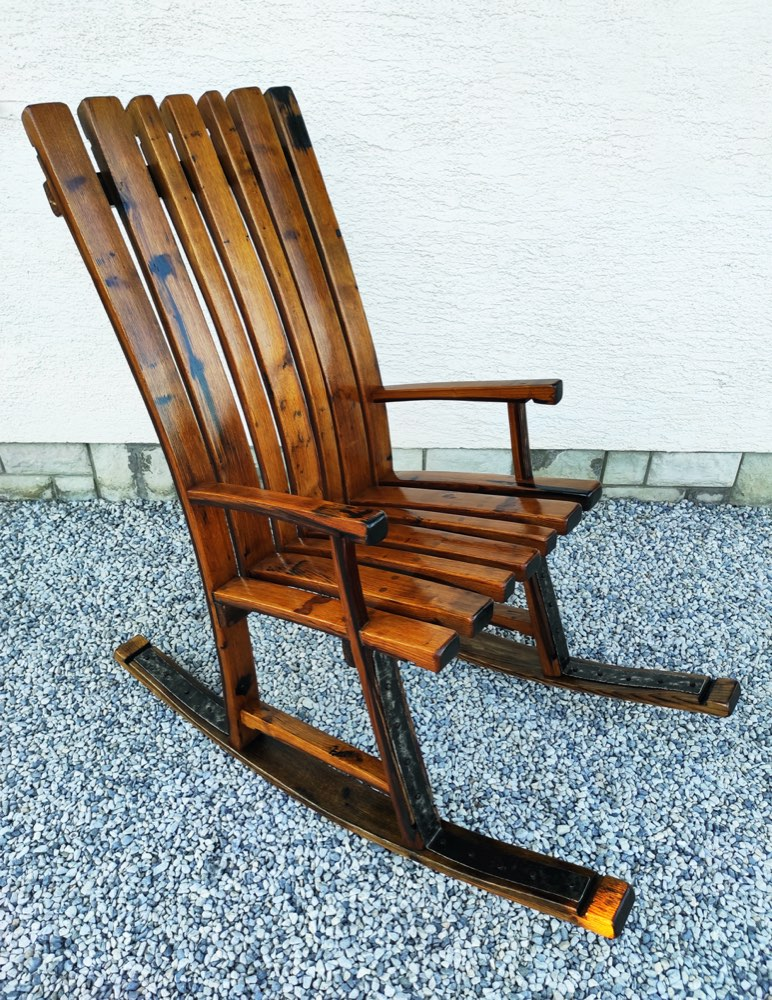
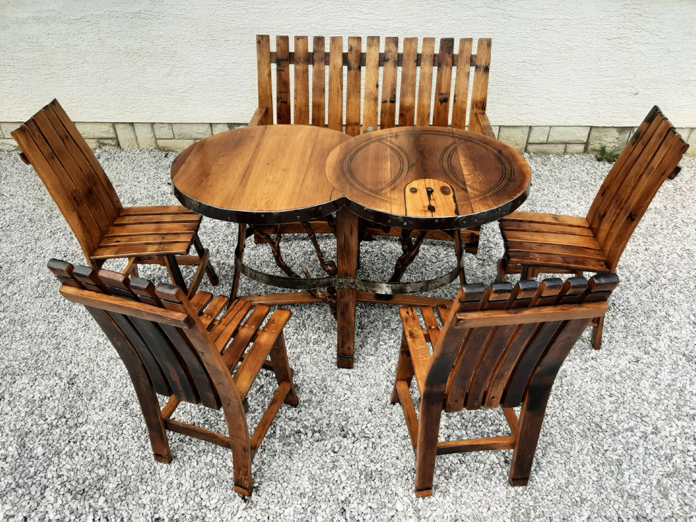
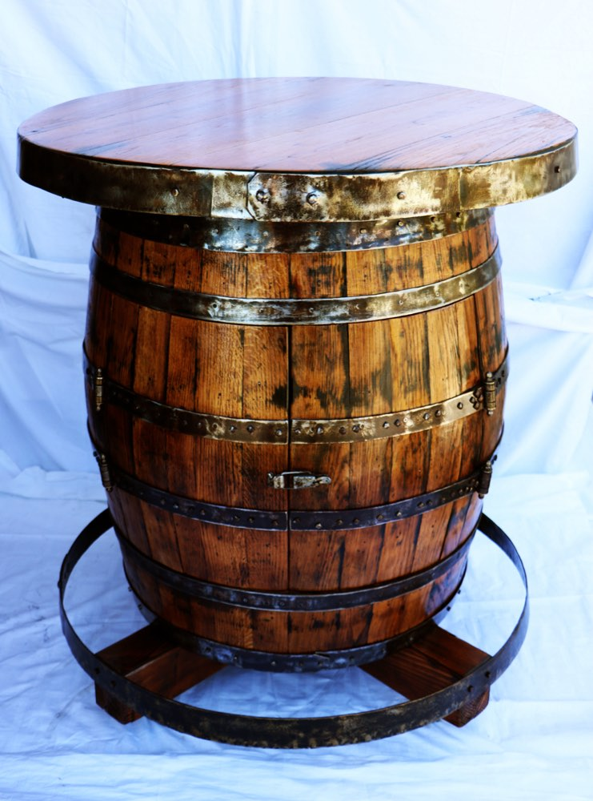
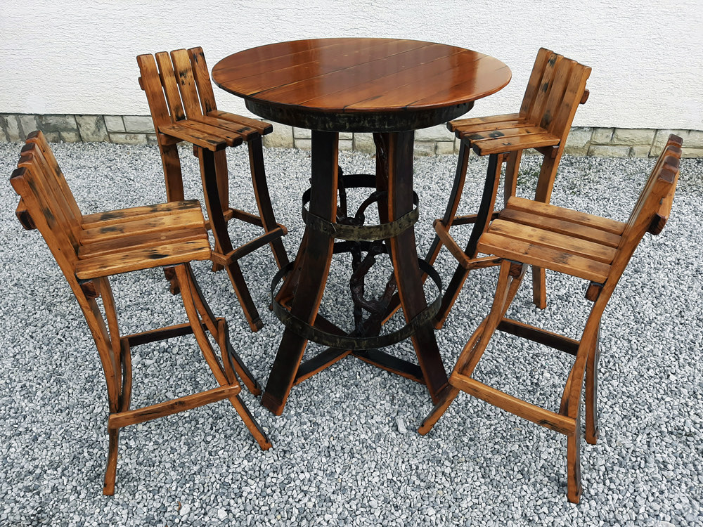
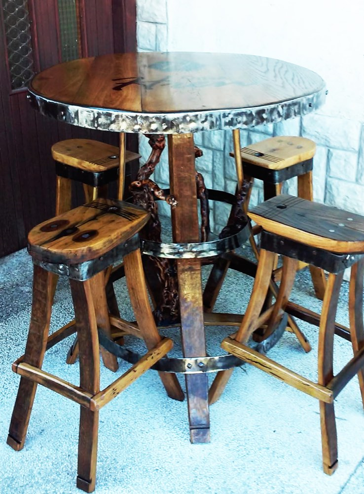
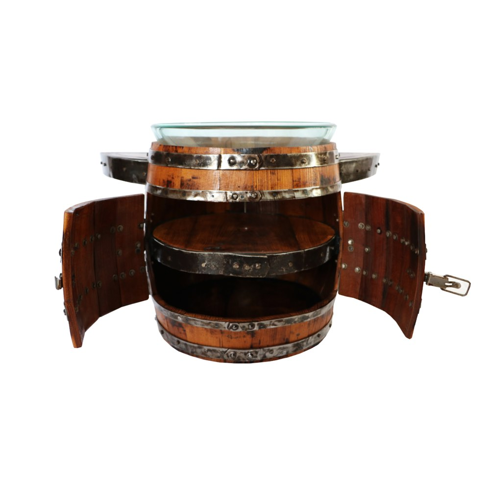
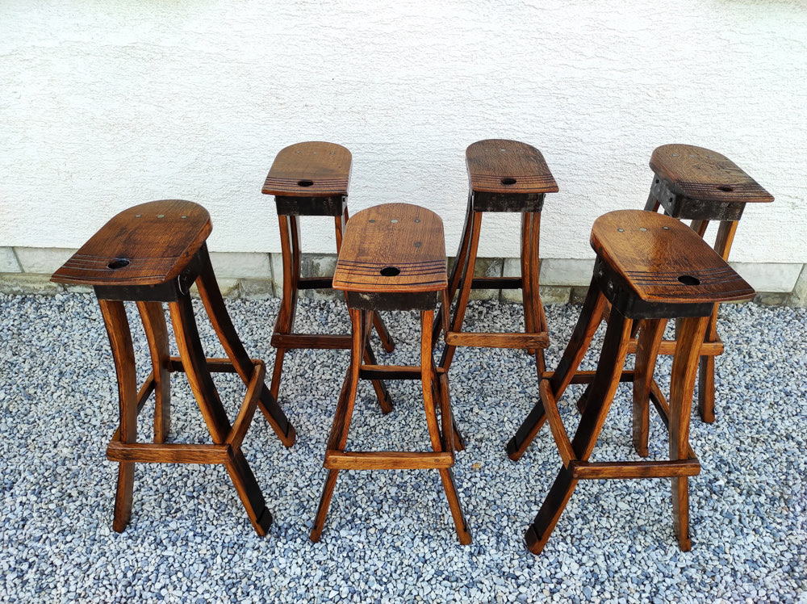
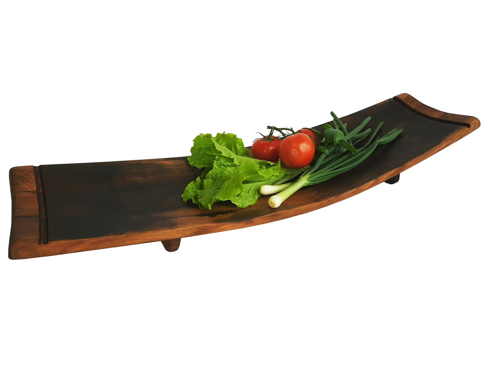
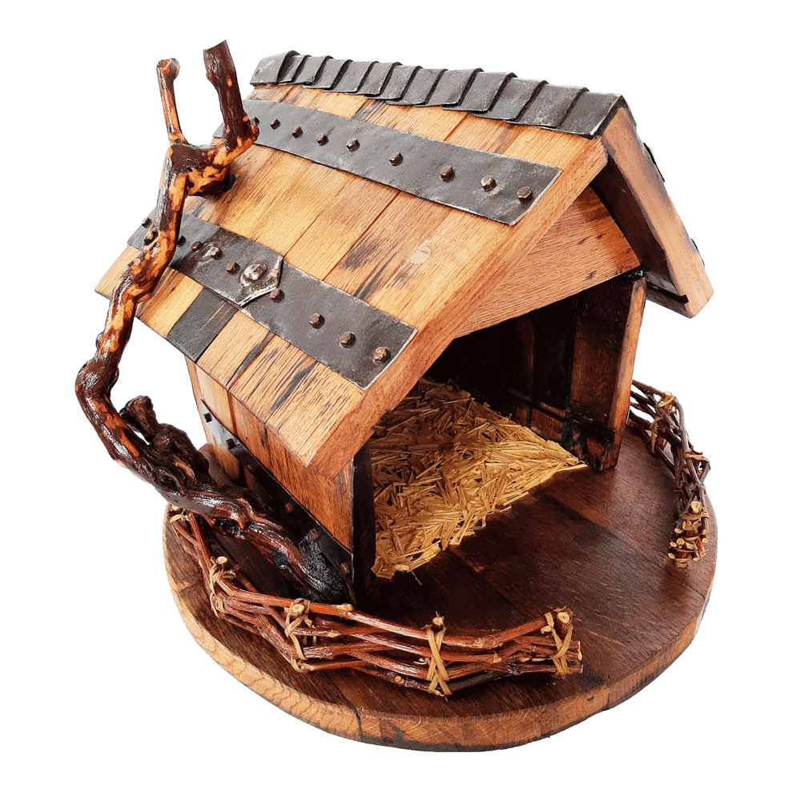

Radovi
Fotografije koje je obrt objavio na svom Google profilu: stolovi i barski setovi od bačvi, klupe, stolice za ljuljanje, police za vino, svjetiljke i drugi detalji.
















Imate bačvu, prostor ili ideju?
Javite se i opišite što trebate – od jednog stolca do cijele konobe.